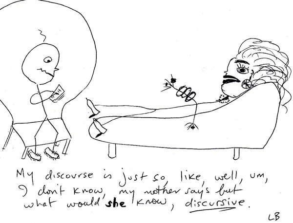

I've written about the phenomenon of discursive collapse several times on Troppo. The engine behind the phenomenon is the desire of the discipline to get on with what it's been doing - filling out some well recognised and somehow aesthetically pleasing research program. So when some problem comes up - like the theory of the second best for instance, there's usually an interesting debate but it can be surprisingly short lived. If the problem threatens the logic of the research program it just fades into the background, largely ignored - but usually with a little sub-discipline starting up as a kind of ghetto in the discipline. The discipline exercises what Marcuse called 'repressive tolerance' which is to say it doesn't directly repress the discussion, it tolerates it, and ignores its corrosive implications. Indeed the process can even lead to discursive reversal which is some travesty of the intentions and import of the original piece of work (on which also see this). In this post, after providing a further worked example, I'll point to another brilliant explanation of what I take to be the same phenomenon in macro.Lipsey's and Lancaster's 'general theory of the second best' illustrated the radical insufficiency of existing economic theory for generating robust policy conclusions by demonstrating that, where just one of the conditions for an optimum was violated, the other conditions of the optimum could no longer be assumed to be desirable. Given that in any actual economy there are endless violations of optimality conditions, Mishan's concern that the new theory might represent a new "impossibility theorem" - in the tradition of Arrow - was understandable. The new theory initiated a vigorous debate about when one might still warrantably argue that the traditional principles of economic management - eg move pricing towards marginal cost, reduce or compensate for externalities, reduce asymmetric information to the extent possible or cost effective - in admittedly 'second best' situations, notwithstanding the corrosive implications of the theory of the second best (See Mishan reference above). If, from this point, the discipline was to move forward with theoretical integrity, it would have to have been by way of the development of this literature which was true to the theoretical foundations of neoclassical economics.
Today however the careful considerations explored in that literature are rarely confronted in contemporary discussions of policy problems to which the theory of the second best is relevant. In their place - ironically - has arisen a more summary 'aesthetic' of the first best. Here, amidst disdain for the "messy world of the second best", the impression is frequently given that policy makers may choose between 'first' and 'second best' policies - when the burden of the theory is to suggest that in second best situations, what looks like first best policy will generally be third best. In this way the theory of the second best emerges not as a caveat about the appropriateness of 'first best' principles, but rather as a problem to be somehow avoided. And so, as was the case with the Pareto criterion, courtesy of some logical shortcuts which, like the magician's misdirection, depart momentarily from otherwise fastidious standards of rigour, a means of avoiding the problems emerges. Thus, again and again, economists excuse themselves from the difficulties of second best considerations by way of the assertion that sufficiently thoroughgoing liberalisation is capable of "the immediate removal of all distortions" (p. 203) - a spectacular logical leap given the myriad 'distortions' endemic to any economic system which remain after any liberalisation. Certainly there are few persuasive empirical or theoretical reasons for supposing that economic theory indicates that instant and total liberalisation is beneficial.[1]
By such means, the significance of the impossibility theorem is transformed into something which not only elides the very difficulties of complexity and transition it sought to confront, but brings about discursive reversal. The disruptive outbreak of an 'impossibility theorem' and the disciplinary paralysis it portends is not just repressively tolerated. A new lexicon arises from it that implies the very opposite of what the theory had suggested. When the theory tells us that in the presence of distortions second best is the best one can do, the terminology of "first best" and "second best" policy options suggests the opposite. Who'd choose second best options when there's first best ones to be had.
Given all this I greatly enjoyed reading this blog post which explains in detail how this works in macro-economics:
Steve Williamson writes “It takes a model to beat a model. You can say that you don’t like [modern macroeconomics], but what’s your model? Show me how it works.” Well, I’m going to take up that challenge, because I wrote that model.
In my view, the challenge is not to write a model that works, but to write a model that the macroeconomic establishment will find “convincing.” And that generally requires writing a model that comes to conclusions that are closely related to the existing literature and therefore “make sense” to the establishment. The problem, however, is that many of the implications of the existing literature are batshit insane. (My personal pet peeve is explained in detail below, but there are others … ) The choice faced by a young economist is often to join the insanity or leave the profession. (This is actually a conversation that a lot of graduate students have with each other. Many compromise “temporarily” — with the goal of doing real research when they are established.)
Williamson’s own area of macro, new monetarism, which is the area that I was working in a decade ago too, illustrates the gravitational pull of conformity that characterizes the macroeconomics profession, and that interferes with the development of a genuine understanding by economists of the models they work with.
Williamson acknowledges, as every theorist does, that the models are wrong. The problem with macro (and micro and finance) is that even as economists acknowledge that formally there is a lot to criticize in the market clearing assumptions that underlie far too much of economic theory, they often dismiss the practical importance of these critiques — and this dismissal is not based on anything akin to science, but instead brings to mind a certain Upton Sinclair quote. (Note that there are sub-fields of economics devoted to these critiques — but the whole point is that these researchers are separated into sub-fields — in order to allow a “mainstream” segment of the profession to collectively agree to ignore the true implications of their models.)
Let’s, however, get to the meat of this post: Williamson wants a model to beat a model. I have one right here. For non-economists let me, however, give the blog version of the model and its implications.
(i) The model fixes the basic error of the neo-classical framework that prevents it from having a meaningful role for money. I divide each period into two sub periods and randomly assign (the continuum of) agents to “buy first, sell second” or to “sell first, buy second” with equal probability.
Note that because the model is designed to fix a well-recognized flaw in the neo-classical framework, it’s just silly to ask me to provide micro-foundations for my fix. The whole point is that the existing “market clearing” assumptions are not just micro–un–founded, but they interfere with the neo-classical model having any relationship whatsoever to the reality of the world we live in. Thus, when I adjust the market clearing process by inserting into it my intra-period friction, I am improving the market-clearing mechanism by making it more micro-founded than it was before.
Unsurprisingly, I wasn’t comfortable voicing this view to my referees, and so you will see in the paper that I was required to provide micro-foundations to my micro-foundations. The resulting structural assumptions on endowments and preferences make the model appear much less relevant as a critique of the neo-classical model, since suddenly it “only applies” to environment with odd assumptions on endowments and preferences. Thus, does the macroeconomics profession trivialize efforts to improve it. . . .
There's a fair bit more detail in the post - of a similar level of simplified wonkish difficulty which is to say you can follow it without needing to fully understand each of the examples and bits of theory she explicates.
Anyway, the extract above provides lovely, detailed example of the way it works. It's kind of clever. And sad that so few of those who rise to the top of the profession (including those who I'm a big fan of - like Paul Krugman) really understand the phenomenon. That's partly the Upton Sinclair effect but I expect it's more like an acquired Upton Sinclair effect. As Carolyn says in the blog post, lots of people appreciate this early in their career. They then either exit academia (like me) or press on in academia either becoming boffins in a specialist disciplinary cul-de-sac or marginalised and often embittered renegades. A sad and sorry state for the world to be in, but there it is.
Postscript I: Here's Simon Wren-Lewis making a similar point with a different example.
Now your basic New Keynesian model contains a huge number of things that remain unrealistic or are just absent. However I have always found it extraordinary that some New Classical economists declare such models as lacking firm microfoundations, when these models at least try to make up for one area where RBC models lack any microfoundations at all, which is price setting. A clear case of the pot calling the kettle black! I have never understood why New Keynesians can be so defensive about their modelling of price setting. Their response every time should be ‘well at least it’s better than assuming an intertemporal auctioneer’.
Postscript II: The Cambridge capital controversies are another example. A lengthy theoretical debate which the Cambridge folks won, to the effect that it is theoretically illegitimate to model the amount of 'capital' in an economy by simply aggregating all the bits of capital around the place, the canon simply pressed on with the problematic formulation. Another 'impossibility theorem' consigned to the flames with repressive tolerance. As Wikipedia puts it succinctly "Most often, neoclassicals simply ignore the controversy, while many do not even know about it. Indeed, the vast majority of economics graduate schools in the United States do not teach their students about it".
[1] There is scant empirical support for the proposition since instant and total liberalisation has not been attempted by any country and there are very few examples of actual reform which are tolerably close to it. The objection to taking neoclassical theory to support such a course is twofold. Firstly the standard neoclassical theory, which is taken to support instant and total liberalisation, makes a range of unrealistic assumptions. This point is logically equivalent to the point made above - that 'distortions' remain in a thoroughly liberalised economy the assumptions of neoclassical theory notwithstanding. Secondly the 'comparative static' method of neoclassical theory abstracts from the very problem at issue - transition.
Great post Nick, I find the general level of ignorance about the implications of the general theory of second best in policy circles and academia quite concerning.
I think it starts in introductory micro texts where the topic is completely ignored, you find scant reference to it in intermediate level texts, and absolutely nothing in graduate level texts. The only reason I can think of for this is that the result is inconvenient to the general premise on which the rest of the content in these books rests. What does it say about the economics profession that it chooses to ignore inconvenient results?
In policy circles I think the problem is that second best considerations make for messy advice, and the old 'one handed' economist problem. You can have situations where it is unclear whether full liberalisation or adding another distortion are optimal. There may be no a priori theoretical presumption in favour of either approach. Arguments may be made on both sides that the policy intervention is desirable. So the problem is one of communicating complexity. Unfortunately it seems that partial equilibrium analysis based on neoclassical assumptions is about as far as most policy advice gets in the public sector. Therefore, a general equilibrium analysis, let alone considerations of the theory of second best, don't get to the starting line in most policy analysis.
Then of course their is ideology. Milton Friedman famously said that everything that is not contained in the Micro 101 textbook is 'made up'.
I'll read it again later, out of my depth, although I think I get a general drift, but enjoyed the Upton Sinclair quote immensely and smiled nostalgically at the chance meeting with Marley's ghost, Herbert Marcuse.
A link of relevance
Intriguing that Jerry Fodor tells a story similar to mine, though in philosophy rather than in economics. See the several paragraphs leading to this one.
Discursive collapse on growth https://twitter.com/MuneebASikander/status/1636952107981979648